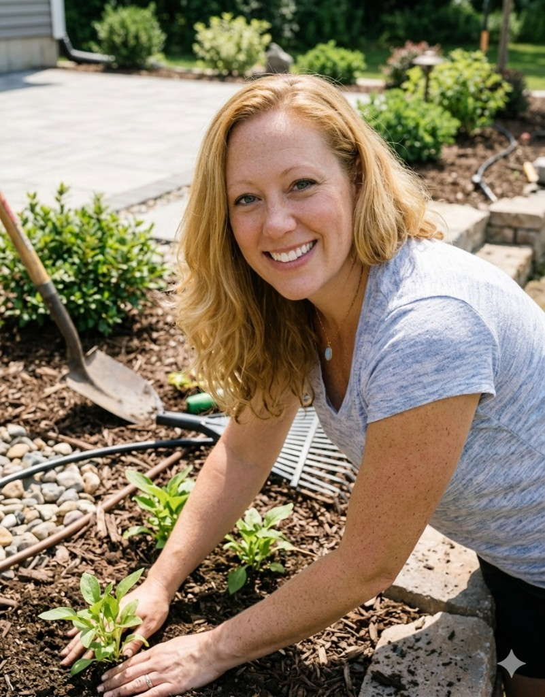

Audrey Dickman
Managing Partner – Field Operations & Execution, Lonestar Agro
Education
B.S. in Biology with a Chemistry minor, Angelo State University (1999)
Skills
17 years of oilfield experience. Duties have included: frac design, bidding out to vendors within a budget, scheduling and organizing vendors on location, supervising location and calling jobs during acid diverter, frac, wireline, and coil work, drill-outs, analyzing job data, and compiling reports. Also, reviewing job QA, vendor performance, and reconciling tickets. Experience in the Permian Basin, Louisiana/East Texas, and South Texas. Proficient with computers (Excel, Word, Wellview, etc.). Experience in Wolfcamp, Dean, Sprayberry, Bonesprings, Marcellus, Delaware, San Andres, Strawn, Haynesville, Cotton Valley, and Eagle Ford formations.
Experience
Samson, JW, Lewis Energy, Pacesetter, Piedra, Ovintiv, Revenir
Prep location for work, supervise and call frac jobs (frac and wireline experience — organizing large and small groups of people, setting and testing wellheads, scheduling and supervising various vendors, process all job paperwork, and active participant in problem solving), coil work and some workover rig experience.
Callon Petroleum
Set-up location and vendors for jobs, supervise and call fracs, drill-out with coil and stick pipe. Assisted with frac job design. Trained Callon employees on frac jobs until they were capable of supervising on their own. Initiated company’s horizontal fracing procedures and helped grow their program from two vertical wells a month to two horizontal wells and two to three vertical wells a month.
Supervised many aspects of frac jobs with various service companies to ensure overall quality. Worked on vertical and horizontal wells in the Permian Basin.
Halliburton Energy Services
Verify and order chemicals, coordinate various job details with service supervisors, organized pre-job meetings with Halliburton employees and customers, monitor job data while pumping, update and maintain real-time software programs while pumping, provide technical advice to customers, prepare post job reports. Trained new engineers until they were capable of working on their own.